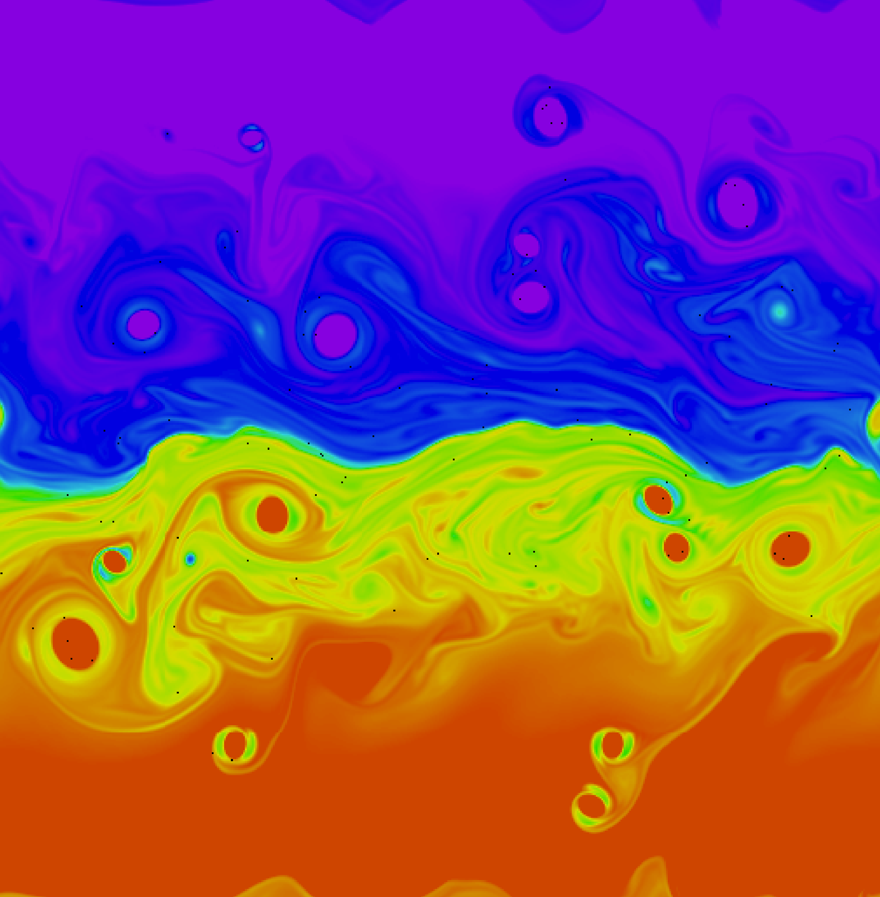

class: center, middle <br/><br/><br/><br/> .authors[Authors] .title[Paper title ] .journalanddate[Journal name and year] <br/><br/> .linktopaper[[{Link to paper}](https://www.dagbladet.no)] <br/><br/> .zotbibcode[zotbib_2002] <br/><br/><br/> .note[Notes by Øyvind Lundesgaard. Created using a modified version of [{Liminal}](https://github.com/jonathanlilly/liminal).] <!----- name: toc class: left #Table of Contents 1. [Introduction](#overview) 1. [Method](#method) 1. [Conclusions](#conclusions) --- layout: true .toc[[✧](#toc)]--> --- name: overview class: left # Overview Quick summary of the paper. --- name: method class: left # Methods --- class: center ##An example figure  --- class: center ##An example figure with to columns .left-column[<br/>Text in the right column.] .right-column[ <br/><br/>*Text below the figure*] --- class: center #An Animation Commented out for now. <!-- <video preload="auto" width="60%" height="auto" data-setup="{}" autoplay loop controls><source src="./videos/vortexmovie.mp4" type="video/mp4" /></video> --> --- name: conclusions class: left # Conclusions